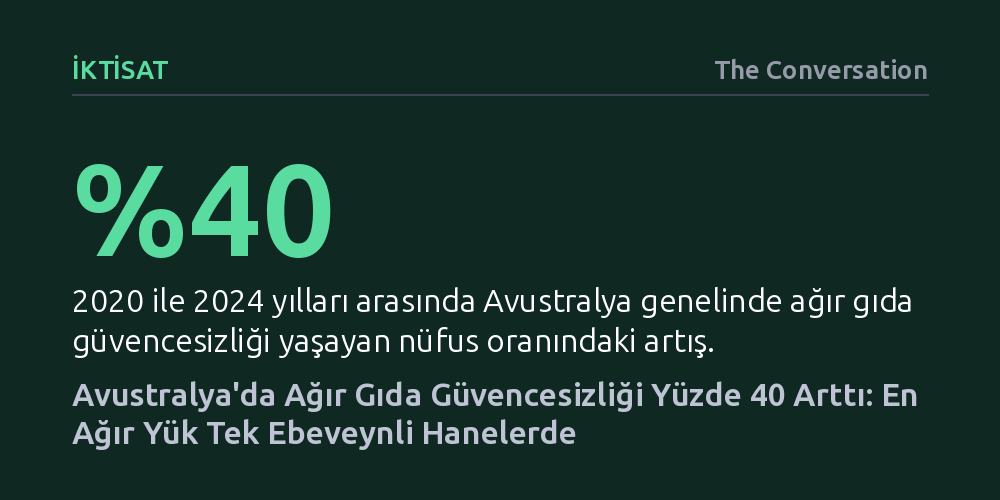

IKTISAT · The Conversation · 2026-10-26
HILDA verilerine göre Avustralya'da ağır gıda güvencesizliği 2020-2024 arasında yüzde 40 artarak nüfusun yüzde 3'üne ulaştı. Yükselen hayat pahalılığı nedeniyle özellikle tek ebeveynli haneler ve çocuklu aileler öğün atlamak zorunda kalıyor.
Gelişmiş bir ekonomide dahi gıda yetersizliğinin salt marjinal bir yoksulluk göstergesi olmaktan çıkıp yükselen hayat pahalılığıyla çocuklu ve tek ebeveynli haneleri hızla içine çeken yapısal bir geçim krizine dönüştüğünü gösteriyor.

Avustralya genelinde gıda fiyatlarının hızla tırmanması, gelişmiş bir ekonomide dahi temel beslenmeye erişimi geniş kitleler için yakıcı bir geçim meselesine dönüştürdü. Hanehalkı, Gelir ve İş Dinamikleri (HILDA) panel araştırmasının verileri, ülkede 'ağır gıda güvencesizliği' yaşayan bireylerin oranının 2020 ile 2024 yılları arasında yaklaşık yüzde 40 arttığını gösteriyor. Dört yıl önce nüfusun yüzde 2,1'i bu düzeyde bir mahrumiyet içindeyken, oran 2024 itibarıyla yüzde 3,0 seviyesine fırlamış durumda.
Bu tablo yalnızca hanelerin bütçesindeki geçici bir daralmaya değil, bireylerin sağlığı ve ruhsal esenliği üzerinde kalıcı hasarlar bırakan derin bir yoksunluğa işaret ediyor. Gıda güvencesizliği basamaklı bir süreçtir: İnsanlar ilk aşamada daha ucuz ve kalitesiz besinlere yönelir, bütçe yetmeyince porsiyonları küçültür, en ağır aşamada ise doğrudan öğün atlamak ya da gün boyu hiçbir şey yemeden aç kalmak zorunda kalır. Ülkedeki yardım kuruluşu Foodbank her üç haneden birinin bir düzeyde gıda sorunu yaşadığını tahmin ederken, HILDA'nın yakaladığı bu yüzde 3'lük kesim doğrudan kronik açlıkla yüzleşen en kırılgan kitleyi temsil ediyor.
Gıda güvencesizliğini hassas biçimde ölçmek oldukça güçtür; çünkü hanelerin yetersiz beslenmeyle kurduğu ilişki tedirginlikten fiili açlığa kadar geniş bir yelpazeye dağılır. Avustralya İstatistik Bürosu'nun 2023 tarihli anketinde hanelerin yüzde 13,2'sinin gıda güvencesizliği yaşadığı tespit edilmiş olsa da bu tür kesitsel araştırmalar düzenli yinelenmediği için eğilimleri ve yapısal dönüşümleri göstermekte yetersiz kalmaktadır.
Araştırmacılar bu veri açığını kapatmak için Birleşmiş Milletler Gıda ve Tarım Örgütü'nün (FAO) sekiz soruluk uluslararası deneyim ölçeğini HILDA paneline entegre etti. Yaklaşık 15 bin kişinin yanıtladığı bu anket dizisinde sekiz sorudan en az yedisine olumlu yanıt verenler 'ağır gıda güvencesizliği' yaşayanlar olarak tanımlanıyor. HILDA'nın en kritik bilimsel üstünlüğü ise aynı bireyleri ve aileleri yıllar boyunca düzenli aralıklarla izlemesi. Bu sayede kimlerin gıda güvensizliğine sürüklendiği, kimlerin bu darboğazdan çıkabildiği ve bu kırılmaları hangi ekonomik faktörlerin tetiklediği somut olarak takip edilebiliyor.
Veriler, yaşanan gıda krizinin toplumsal kesimlere eşit dağılmadığını ve en ağır faturanın tek ebeveynli hanelere kesildiğini çarpıcı biçimde ortaya koyuyor. Küçük çocukları bulunan tek ebeveynli ailelerde ağır gıda güvencesizliği oranı yüzde 11,57'den yüzde 13,68'e çıktı. 15 yaşından büyük çocukları olan tek ebeveynli ailelerdeki tablo ise çok daha sert: Bu gruptaki oran yüzde 1,73'ten yüzde 4,42'ye fırlayarak iki kattan fazla artış gösterdi.
Tek ebeveynler kira, faturalar, çocuk bakımı ve mutfak masraflarını tek bir gelire yaslanarak karşılamak zorunda. Üstelik tek başına üstlenilen bakım sorumluluğu, çalışma saatlerini artırarak ek gelir elde etme imkânını da ortadan kaldırıyor. Ancak kriz yalnızca tek ebeveynlerle sınırlı kalmadı; çocuklu çiftlerin oluşturduğu hanelerde de ağır gıda güvencesizliği yüzde 87 gibi devasa bir sıçrama kaydetti. İki ebeveynin çalıştığı haneler dahi tırmanan ipotek borçları, fahiş kira artışları ve istihdamsızlık baskısı altında kaldığında ilk olarak mutfak masraflarını kısmak durumunda kalıyor.
Genel eğilim merkezden uzaklaştıkça gıda güvencesizliğinin derinleşmesi yönünde olsa da son veriler krizin artık ülkenin büyük metropollerini de hızla kuşattığını gösteriyor. Eyalet başkentleri arasında en çarpıcı tırmanış Perth'te görüldü; şehirdeki ağır güvencesizlik oranı yüzde 1,35'ten iki katına çıkarak yüzde 2,79'a ulaştı. Adelaide ise yüzde 4,70 ile büyükşehirler arasındaki en vahim düzeye ulaştı. Sidney ve Melbourne'de de belirgin artışlar yaşanırken, oranların hafif gerilediği tek metropol Brisbane oldu.
Kırsal bölgelerde beliren tablo ise ironik bir gerçeği gün yüzüne çıkarıyor. Avustralya'nın tarımsal üretim merkezleri olan pek çok kırsal bölgesinde gıda güvensizliği tavan yaparken, gıdanın üretildiği yerde yaşamanın sofraya erişimi güvence altına almadığı anlaşılıyor. Victoria eyaletinde Melbourne merkezinde oran yüzde 2,82 iken eyaletin iç kırsalında yüzde 2,00 olarak ölçüldü; fakat eyaletin daha dış kırsalına çıkıldığında yoksunluk yeniden sıçrıyor. Bu bölgesel farklılıklar; yerel konut maliyetleri, ulaşım imkânları ve kamu hizmetlerine erişim dinamiklerinin gıda bütçesi üzerindeki doğrudan belirleyiciliğini kanıtlıyor.
Gıda bankaları ve hayır kurumları kriz anlarında yoksulluğun akut etkilerini hafifleten vazgeçilmez bir emniyet sübabı oluşturuyor; ancak bu kuruluşların tek başlarına sorunun kökenindeki geçim krizini çözmesi olanaksız. Ağır gıda mahrumiyetindeki bu hızlı tırmanış, ülkenin sosyal güvenlik, konut ve gıda politikalarının acilen yeniden yapılandırılmasını zorunlu kılıyor.
Hazırlıkları yürütülen Ulusal Gıda Güvenliği Stratejisi gibi kapsamlı adımların başarıya ulaşabilmesi, sahadaki gerçek durumu düzenli, ayrıntılı ve boylamsal verilerle haritalandırmaktan geçiyor. Hangi hanelerin hangi baskılar yüzünden sofrasından kısmak zorunda kaldığı netleştirilmeden yürütülecek genel geçer sosyal yardımlar, sınırlı kamu kaynaklarının en riskli gruplara zamanında ulaşmasını engelleyecektir.